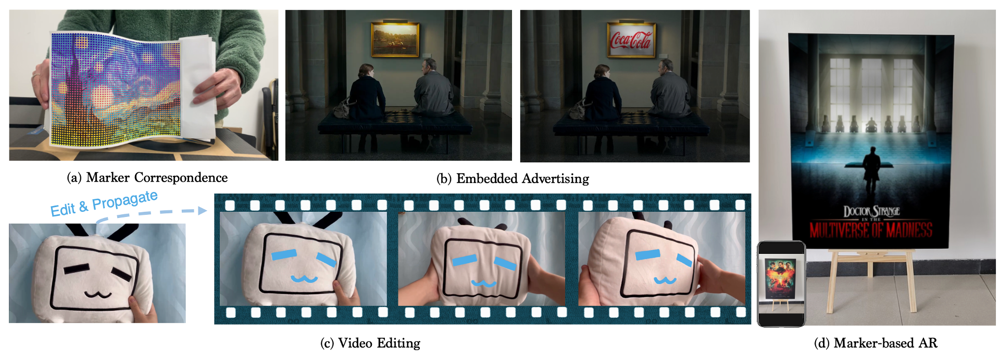

1The Chinese University of Hong Kong
2State Key Lab of CAD & CG, Zhejiang University
3NVIDIA AI Technology Center, NVIDIA
* denotes equal contributions
We tackle the problem of estimating correspondences from a general marker, such as a movie poster, to an image that captures such a marker. Conventionally, this problem is addressed by fitting a homography model based on sparse feature matching. However, they are only able to handle plane-like markers and the sparse features does not sufficiently utilize appearance information. In this paper, we propose a novel framework NeuralMarker, training a neural network estimating dense marker correspondences under various challenging conditions, such as marker deformation, harsh lighting, etc. Deep learning has presented excellent performance in correspondence learning once provided sufficient training data. However, annotating pixel-wise dense correspondence for training marker correspondence is too expensive. We observe that the challenges of marker correspondence estimation come from two individual aspects: geometry variation and appearance variation. We therefore design two components addressing these two challenges in NeuralMarker. First, we create a synthetic dataset FlyingMarkers containing marker-image pairs with ground truth dense correspondences. By training with FlyingMarkers, the neural network is encouraged to capture various marker motion. Second, we propose the novel Symmetric Epipolar Distance (SED) loss, which enables learning dense correspondence from posed images. Learning with the SED loss and the cross-lighting posed images collected by Structure-from-Motion (SfM), NeuralMarker is remarkably robust in harsh lighting environments and avoids the synthetic image bias. Besides, we also propose a novel marker correspondence evaluation method circumstancing annotations on real marker-image pairs and create a new benchmark. We show that NeuralMarker significantly outperforms previous methods and enables new interesting applications, including Augmented Reality (AR) and video editing.
(a) The marker correspondence predicted by our NeuralMarker for an offhand marker. (b) We can easily embed advertisement into movies and TV series via NeuralMarker. (c) We can edit a frame in a video clip and propagate the editing effects to the whole video clip. (d) The marker-based Augmented Reality~(AR). Please refer to the supplemented video for more results.